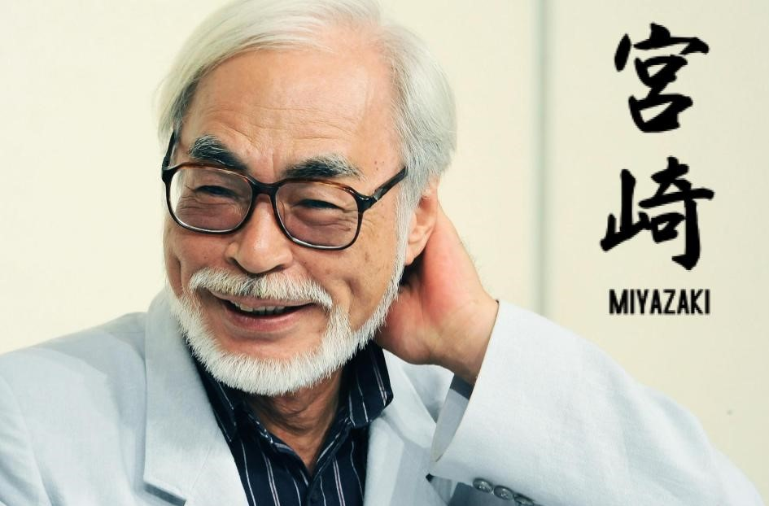

Tribute to Miyazaki

Miyazaki Hayao is a Japanese anime director whose work with Studio Ghibli has broken
various records with his animated films. Some notable films include Princess Mononoke
(1997), a blockbuster that broke Japanese box-office records when it was released, and
Spirited Away (2001), which won the top prize at the 2002 Berlin International Film
Festival, best Asian film at the Hong Kong Film Awards, best picture at the 2002 Japanese
Academy Awards, and was, at this point in Japanese history, the top-grossing film of all
time. He temporarily retired in 2015, but then returned to work on the film Kemushi no Boro,
his first fully computer-animated short film that was later turned into a feature-length release.
Notable Movies
Castle in the Sky (1986)

The Grave of the Fireflies (1988)
Totoro (1988)
Kiki's Delivery Service (1989)
Princess Mononoke (1997)
Sprited Away (2001)
Howl's Moving Castle (2004)
Ponyo (2008)